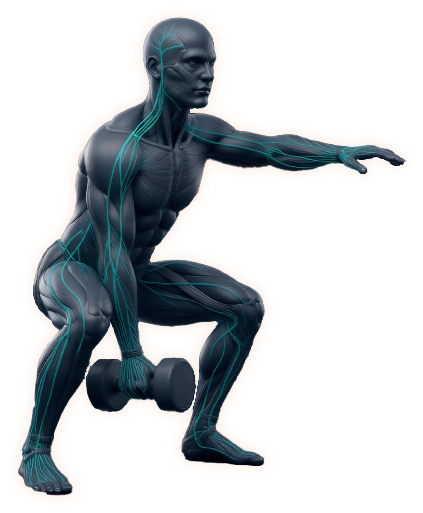

You feel tension, a collective pressure. You sense a shift but you can't find the words to describe it. A subtle discomfort, an abnormal state, with no explanation. Your chest tightens. You check your surroundings. The room hasn't changed. The body has.
You've felt this before. The moment between normal and sensing something is different. Not wrong. Not right. Different. A signal arriving before the interpretation.
You've been taught to override it. Reach for the phone, check the time, label the pressure as anxiety and move on. The signal dissolves into distraction, gets absorbed by life noise. Eventually, your mind stops receiving what you've trained yourself to ignore.
But your body doesn't stop signaling.
Right now, beneath every conscious thought you're having, your body is running a signaling operation of staggering complexity. Your fascia — the entangled web of connective tissue that wraps every muscle, organ, and nerve — carries seven interoceptive nerve endings for every one proprioceptive nerve ending. Seven channels sensing how you feel for every one tracking where you are.
You are wired 7-to-1 for state over position.
This isn't a metaphor. It's histology. Your body allocates seven times more neural architecture to sensing its own condition than to tracking its location in space. Seven channels of signal, reporting continuously — tension, temperature, pressure, stretch, chemical balance, force, vibration — and one channel of position.
Your cognitive default has been the one. The seven have been running without you. Your mind's default is distracted, no longer tuned-in to your body's signaling symphony.
Somewhere between the stopwatch and the spreadsheet, training became override practice.
Push through.
Ignore signals.
Chase metrics.
Override what the body sends.
Repeat until numb.
This ongoing PR quest is the buoy you swim toward. Not because you chose it — because it's the only option anyone presented. The body sends information constantly: fatigue, compensation, misalignment, readiness, capacity, rhythm. The cultural response to all of it became identical: work harder.
Discomfort meant progress. Silence meant weakness. The person who could override the loudest won.
And for most people, it worked well enough. Until it didn't. Until the volume accumulated without the capacity. Until the effort increased without the clarity. Until the programs kept failing and the answer was always a different program.
The cost was never injury — injury is the dramatic version, the one people notice. The cost was literacy. The quiet erosion of your capacity to read what your own body sends. Not because the signal weakened. Because you were trained to produce noise louder than the signal could survive.
Override culture didn't break your body. It broke your ability to hear it.
Your body is not a machine that needs programming. It is an intelligent system that needs communication.
Every cell in your body participates in a collective intelligence that knows how to build, repair, adapt, and respond — without your conscious instruction. Your immune system solves problems you can't articulate. Your wounds heal through coordination you never orchestrate. Your bones remodel along lines of force without being told which lines matter.
You are made of competent material.
This is not poetry. Bioelectric research has demonstrated that cellular collectives store pattern memories, navigate toward goal states, and solve problems in high-dimensional spaces that would overwhelm any conscious calculation. Your body doesn't wait for you to figure out the answer. It is already computing.
What it needs from you is not instruction. It's signal.
When you place your hands on a dumbbell and lower into a squat, you are not telling your muscles what to do. You are communicating a constraint — a goal state — to a cellular collective that has been solving movement problems since before you had language. The dumbbell doesn't build you. It speaks to something in you that already knows how to respond.
Every rep is a signal sent. Every set is a pattern heard. Every session is a conversation between you and competent material — navigating toward coherence within the constraint you've provided.
You don't build capacity. You clear the interference that prevented capacity from expressing. The capacity was already there. The signal was blocked.
The dumbbell is not a tool. It is a portal.
And the things you were told to chase — the muscle, the fat loss, the physical transformation — those aren't the goal. They're the side effect. When you solve the actual problem — signal clarity between you and your own cellular intelligence — the body handles the rest the way it handles wound healing and immune response and bone remodeling: without being told how. You don't pursue the aesthetic. You restore the communication. The aesthetic resolves on its own, the way every downstream problem resolves when you address what's upstream.
At bodyweight, you can perform a squat while mentally reviewing your to-do list. At significant load, you cannot. This is not willpower. This is metabolic forcing.
Under heavy resistance, your brain must shunt glucose and oxygen away from the prefrontal cortex — the region responsible for planning, projecting, worrying, seeking external answers — and redirect it to the motor and sensory systems actually handling the load. The part of your brain that grasps for certainty runs out of fuel. What remains is direct perception.
You stop calculating and start sensing. The seven come online. The noise floor drops. Signals that were always present become perceptible because the machinery that was generating noise has been metabolically silenced.
This is the mechanism by which physical training produces what meditation invites. Not through willpower. Not through concentration. Through metabolic constraint that makes the prefrontal override biologically impossible.
Your mind quiets not because you told it to. It quiets because the dumbbell starved it.

And in that quiet — in the space between the effort and the interpretation — your body's own intelligence becomes audible. Tension patterns you've been carrying for years. Compensation strategies your nervous system built around old injuries. The precise moment where force transfers cleanly and the moment where it leaks. All of it was always broadcasting. You just couldn't hear it over the noise.
This is what we mean by signal literacy. Not a concept to understand. A capacity to restore. The ability to read what your body has been sending all along — because load created the conditions where the override couldn't sustain itself and the signal finally got through.
This methodology didn't emerge from theory. It emerged from a nervous system that never had the luxury of override.
Temporal lobe epilepsy. Two craniotomies. Two hemispheres. A brain that was forced to choose — during critical developmental windows — between tracking the external world and reading its own internal signals. It chose to read itself. What emerged from that allocation was spatial intelligence so precise it has managed epilepsy for twenty-five years without medication.
What necessity carved into one nervous system, methodology now teaches to any nervous system willing to listen. The adaptation was specific. The capacity it revealed is universal.
The full story lives here →If the templates keep failing.
If you've accumulated volume without accumulating clarity.
If you've been told to push harder when pushing harder is what buried the signal in the first place.
The disconnect between effort and results is not a motivation problem. It is a signal-to-noise problem. The signal was always there. The noise was trained.
You are not broken. You are not undertrained. You are not lacking discipline or the right program or a better coach. You are made of competent material that has been receiving incompetent communication.
The dumbbell is waiting. Not to build you into something you're not. To clear the interference between you and what you already are.
The method is spatial. It begins with attention. →